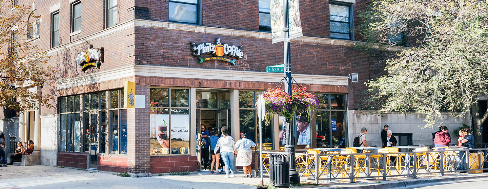
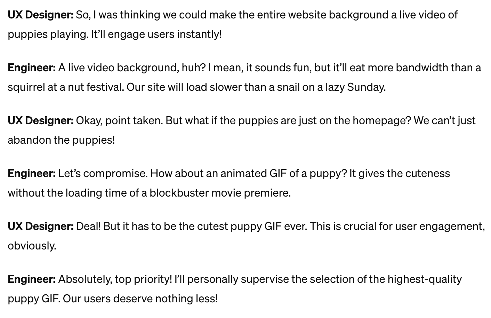

About the Project
While I was in college, the cost of lattes in Hyde Park doubled. The neighborhood UChicago calls home on the south side of Chicago went from having mom and pop sandwich shops selling $4 lattes to being replaced by Mint Mojitos from Philz, where a pretty penny lets you pick everything from the type of milk to type of sweetener.

UChicago has a history of pushing for self-interested development goals in Hyde Park
as it strives to create a college town to rival the Ivies in the East. The $8 lattes we sipped served
as the inspiration for this research and design project. Wenfei Xu, a postdoctoral student at the
Mansueto Institute for Urban Innovation, and I embarked on a six month project to visualize spatial
data on gentrification in Chicago.
Historically, the story of gentrification is patched together using census data, telling a static
story about the way it impacts the lives of people in gentrifying communities. Previous mapping
projects showing gentrification in Chicago have looked at measures such as changing housing costs
or changes in income at a tract level. However, in a city where gentrification and segregation go
hand in hand, how might another view of the way people interact and live reveal more about
segregation in gentrifying neighborhoods? How might that support or refute the claim that exposure
to neighborhood diversity increases socioeconomic outcomes?
Breaking Down the Research Hypothesis
To really flex the skills higher academia taught us, Wenfei and I produced a 93 word, run-on sentence explaining the metrics we would be examining, weaving in big words like “spatiotemporal” and “epistemological.” This sentence revealed a key gap with the study, one that my work on this project would seek to bridge. How could an issue that is so fundamentally human, pervasive, and observable in our community become so inaccessible due to the language and culture of higher education? Thus, my primary role in this project became to make the findings of this study more widely accessible and engaging through building an interactive visualization.
While school taught me to pinpoint meaning with precise word choice and complex sentences, I found myself drawn to the language of design as a universal language which fundamentally seeks to bring knowledge within reach. This served as the jumping off point for my background research for this project, where I looked for examples of great visual design breaking down a problem into something easier to digest. I found inspiration in the book Food and Drink Infographics: A Visual Guide to Culinary Pleasures and the map created to visualize Manhattan population density.
Food and Drink Infographics brings accessibility to the science, history, presentation, and creation of food by showcasing a multitude of ways in which complex terms can be broken down into simple visualizations (by julienne you mean cut into small sticks). On the other hand, Justin Fung made census data fun and showcased another way of looking at an experience we can all relate to.
From this inspiration, I started by sketching and then mocking up what I envisioned the website looking like. We would have a way for someone to click through and see a story of a neighborhood, a nice choropleth map, and maybe a way to select different cities once we had prepared the datasets for other places.

Armed with a vision and a dream, I faced just one small hurdle, I had never made a map before.
What the Industry Calls "Technical Constraints"
Now if I was at a company working on a team, I would probably hand off the beautiful mockups I made inspired by all the awesome designs I had seen to an engineer. They would tell me something like the great example ChatGPT provided:
However, being the engineer on this project, that meant it was time for me to understand what was actually a technical constraint and what was something I could teach myself to do. In this process, I uncovered a few flaws in my design.
The Graph Problem
The Graph Problem What was originally a “nice to have” feature in my first mockup turned into a nightmare the more I looked into its implementation. To construct the histogram displaying the selected neighborhood’s exposure measure compared to the rest of the graph, I would need to add an entire engine (I was considering D3.js) to compute the statistics and construct the graph, just to show users how that neighborhood stacked up. Given the time constraints on this project and my coding ability at the time, I opted for a static key for showing ranges on the choropleth map. While I could’ve done a static histogram and mapped the interactivity over the image, the original intention was for this project to scale to multiple cities, so having a computed histogram for each city was a cleaner solution and opened the door to a potential future webpage on statistics for the cities.
The Layer Problem
Originally I served the exposure layers on a single tileset from Mapbox and loaded that layer every time the toggle changed. This led to immense lag in the first version of the map experience. To get around this, I changed the exposure layers to populate from multiple smaller tilesets, which could happen concurrently, and only loaded the tilesets once on startup, allowing for faster transitioning down the line.
So, what does this actually mean?

Several weeks into the development of the map, Wenfei and I met and showed the map to some peers. With our embeddedness in the data, we had failed to sufficiently explain what the map was showing, and how this mapped back to gentrification. This led to the Exposure Data box and additional layers that a user could toggle on or off overlaying the exposure data. With the addition of these two features, it better helped contextualize the meaning of our metrics in more understandable terms as well as show how this relates to gentrification for someone who is less familiar with the segregation and gentrification within the city of Chicago. The final piece of the story was to comb through the visualized data and piece together stories. Wenfei put together a miniature case study on Beverly vs. Washington Heights and the stories that the three exposure metrics tell about the area. While there’s just one example, we envisioned this as a means by which someone could have their “hand held” through the data set. After learning how to look at the data set through a few examples, a user might be more able to peruse on their own and come to their own conclusions. Visualizing Chicago Rideshare Costs.
Key Realizations and Learnings
- Design serves as a tool to transform obfuscated, inaccessible knowledge into formats that are easily understandable and accessible to a wider audience
- Being the implementer of your own designs, or at least having a deeper understanding of what it takes to bring the designs to life, will lead to a more seamless, rapid feedback and creation cycle. This eventually leads to a clearer articulation of the vision, which is to the benefit of the end user.
Project Link
Read Wenfei’s paper here.
Team
Allie Chu: UI/UX Designer and Web Developer
Wenfei Xu: Research Coordinator
Presented at the Spring Undergraduate Research Symposium at the University of Chicago